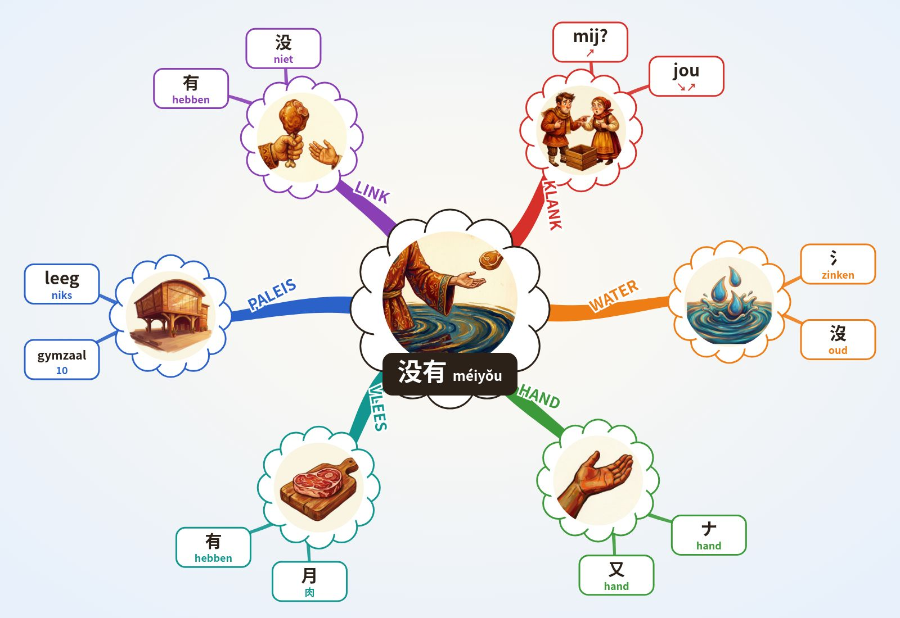

WOORD DIEPTE 4.6 · Chinese leren 4.6
没有 méiyǒu · 2+3 · niet hebben, er is geen
Formule
Chinees: Mandarijn, moedertaalstem. NL/EN/ES: klank-haken, geen vertaling.
Klank-haken NL · EN · ES
NL mij? ↗ + jou ↘↗: “Mij? Jou? Niemand heeft het: niks.”
EN may? ↗ + yo ↘↗: “May I? Yo, there is none!”
ES ¿me? ↗ + yo ↘↗: “¿Me lo das? ¿Yo? No hay nada.”
→ 1e toon hoog en vlak · ↗ 2e toon stijgt · ↘↗ 3e toon zakt en veert terug · ↘ 4e toon valt hard · licht = neutrale toon.
Paleis · Lorentz Lyceum, 10 stops
- Spoorviaduct het hele station hangt boven de Metamorfosenallee
- Stationsgebouw verkeersgebouw van Edwin Megens, 2005
- Beschilderde pijlers muurschildering 2024: groen, geschiedenis, wijk
- Metalen gevel Lorentz gevelsysteem van Rakon (?)
- Cruijff-court kooiveld op het schoolplein
- Glaswand aula grote glazen buitenwand
- Zittrap brede trap die tribune is
- Vleugel vleugel in de aula
- Atrium hart van de school, grafische prints op de wanden
- Zwevende gymzaal sportzaal opgetild naar de 1e verdieping
O'Brien: 10 Onder de zwevende gymzaal is niets. IK zink weg in een plas (氵) en mijn hand (ナ) laat het stuk vlees (月) los: méi? ↗ yǒu ↘↗, er is niks.
Alleen echte, unieke kenmerken (monument-regel). (?) = niet zeker.
Mindmap (Buzan)

Buzan: centraal beeld · gebogen takken, dik bij het midden · 1 woord per lijn · beeld per tak · kleur per tak · radiaal, met de klok mee vanaf KLANK.
3 schrift · streken
氵 water, betekenisdeel van 没 (zinken) · 又 hand · 月 in 有 = vlees (肉), niet maan
Oefen met je vinger
Tik op Oefen en teken streek 1.
Streken · namen
De hanzi bij elke streek is de officiële streeknaam die je in elk Chinees schrijfboek vindt, geen lesstof. Tik of houd de naam vast voor de betekenis.
Opbouw · 没 = 氵 3 + 4 · 有 = ナ 2 + 月 4
Rood = de nieuwe streek.
Streekvragen
Verbindingen (andere woorden)
Geschiedenis
Twijfel
4 beeld
IK zink in het water en mijn hand heeft niets meer.